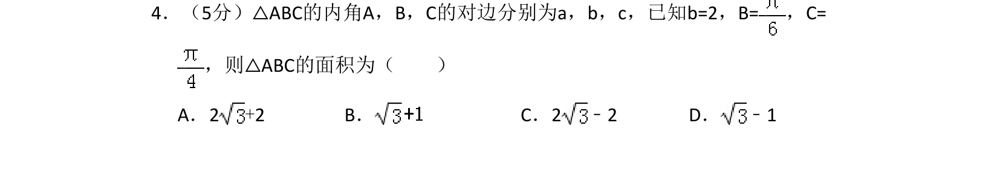
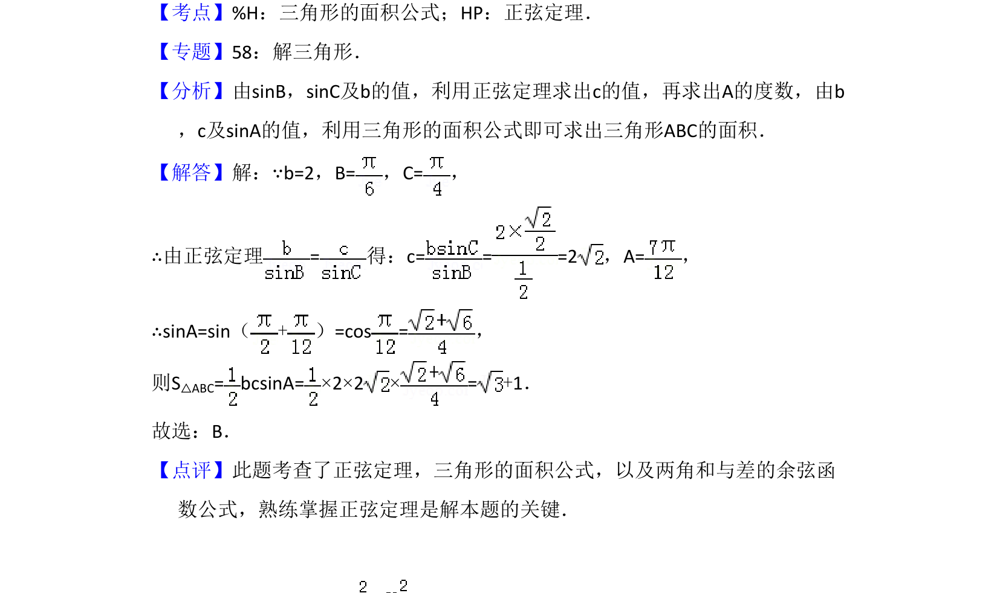

考点：正弦定理 三角形面积 两角和的余弦公式

利用正弦定理求边长，再用三角形面积公式计算面积。

📄 原 PDF 第 3 页：
素材/真题/吉林/2008-2024·（吉林）数学高考真题/2013年高考数学试卷（文）（新课标Ⅱ）（解析卷）.pdf
4．（5分）△ABC的内角A，B，C的对边分别为a，b，c，已知b=2，B=，C= ，则△ABC的面积为（ ） A．2+2 B．C．2﹣2 D． ﹣1
【考点】%H：三角形的面积公式；HP：正弦定理．菁优网版权所有 【专题】58：解三角形． 【分析】由sinB，sinC及b的值，利用正弦定理求出c的值，再求出A的度数，由b ，c及sinA的值，利用三角形的面积公式即可求出三角形ABC的面积． 【解答】解：∵b=2，B=，C=， ∴由正弦定理=得：c= = =2，A=， ∴sinA=sin（+）=cos =， 则S△ABC= bcsinA=×2×2×=+1． 故选：B． 【点评】此题考查了正弦定理，三角形的面积公式，以及两角和与差的余弦函 数公式，熟练掌握正弦定理是解本题的关键．